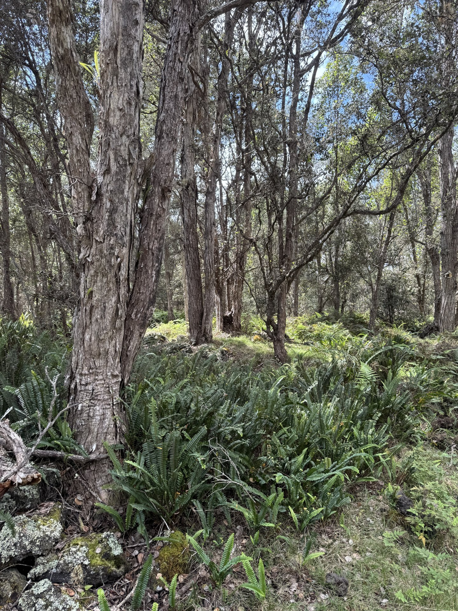
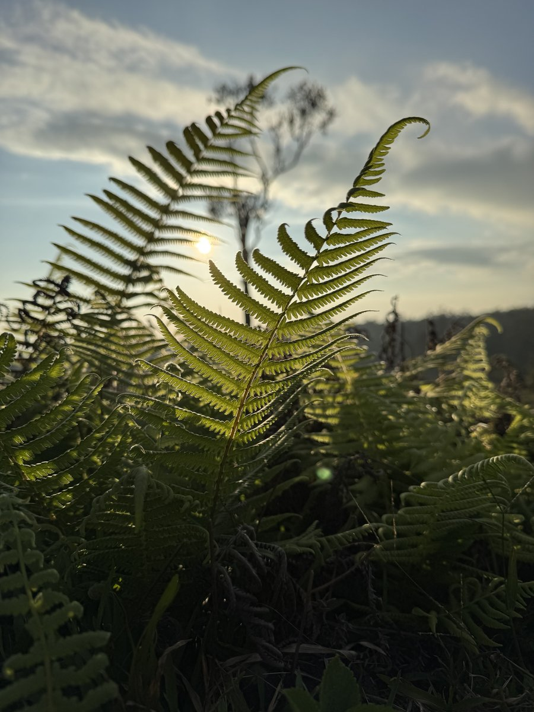
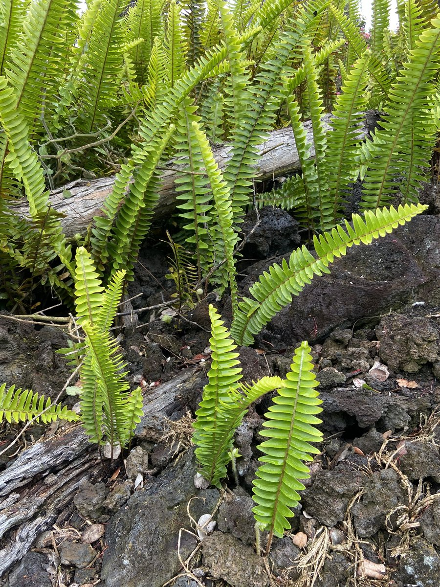
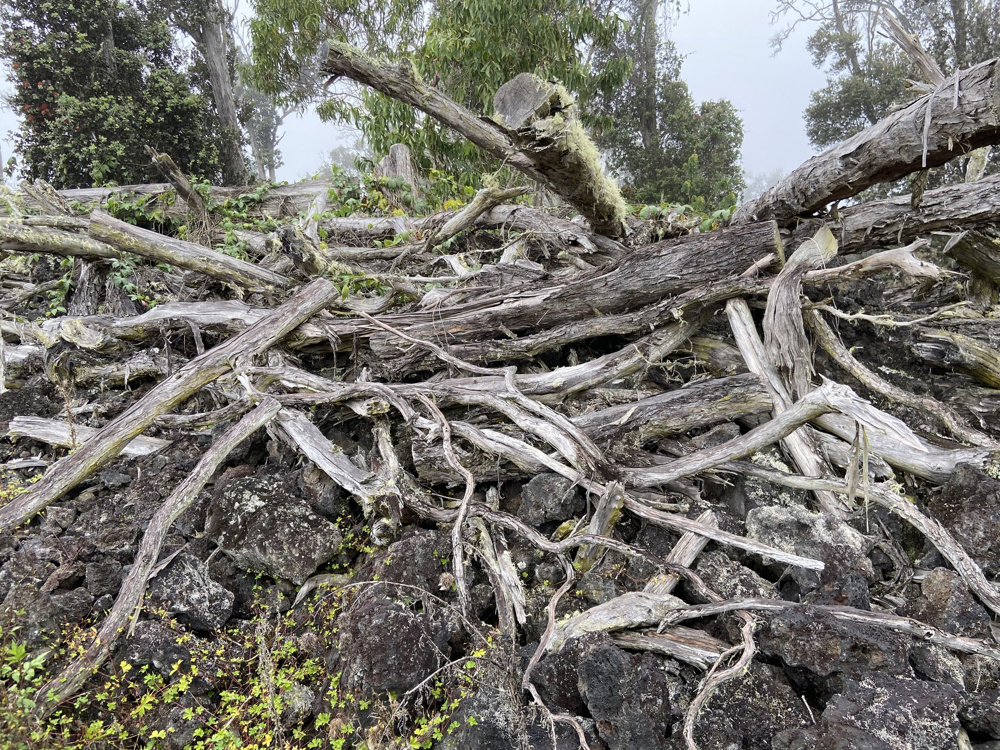

Living without county water or utility power is completely normal in rural Hawai'i — here's what it actually means and what it actually costs.
On the Big Island, living off-grid isn't a lifestyle statement — it's the everyday reality for thousands of residents across Puna, Kaʻū, and parts of the Hāmākua Coast. These districts were subdivided decades ago without utility infrastructure, and many parcels simply don't have access to county water or HELCO grid power.
That doesn't make them undesirable. An off-grid home with a well-designed rainwater catchment system, a properly sized solar array, and a good septic system is a fully functional, comfortable, and often more self-reliant home than its on-grid neighbors.
But it does mean buyers need to understand what they're getting into — because maintaining these systems is your responsibility, not the county's. This guide covers the three critical systems in every off-grid Big Island home: water, power, and waste.
Most off-grid Big Island homes collect rainwater from rooftops into large storage tanks. With 100+ inches of annual rainfall in Puna, a well-maintained system is reliable year-round.
Photovoltaic panels with battery storage and a generator backup are the standard off-grid power setup. Hawaii's solar resource is excellent — one of the best in the country.
Off-grid properties use permitted septic systems for wastewater. The state is phasing out cesspools by 2050 — buying a property with a cesspool comes with a future obligation.
Rainwater catchment collects precipitation from rooftops, channels it through gutters and a first-flush diverter, and stores it in large polyethylene or fiberglass tanks. When properly designed and maintained, it is a clean, reliable water source.
The Puna District receives 100–150 inches of rainfall per year in many areas — among the highest in the state. Even on drier parts of the island, a correctly sized catchment system can meet household needs year-round when supplemented with occasional water delivery during dry spells.
Standard household water usage on catchment is similar to grid-connected homes: 50–100 gallons per person per day for cooking, bathing, laundry, and landscape irrigation. A family of four needs roughly 200–400 gallons per day — meaning a 20,000-gallon tank provides roughly 50–100 days of reserve, depending on rainfall.
The most important component of a catchment system is filtration. Rooftop runoff can contain bird droppings, pollen, and particulates. A properly designed system includes:
First-flush diverter — discards the first 10–15 gallons of each rain event, which carry the most contamination.
Sediment filter — removes particulates before water enters the tank.
UV treatment or reverse osmosis — for drinking and cooking water. Do not drink catchment water without treatment.
Hawai'i has the highest electricity rates in the United States — about 43¢/kWh as of 2026, versus a national average around 18¢. That makes solar economically compelling everywhere on the island, but the system design differs significantly between grid-tied and off-grid properties.
An off-grid solar system must supply 100% of your electricity needs — no utility backup to draw from at night or on cloudy days. This means larger panel arrays, larger battery banks, and a backup generator for extended low-sun periods. The system requires more planning, more upfront cost, and more ongoing maintenance than a grid-tied system.
Most off-grid households on the Big Island use 10–25 kWh per day. A system sized for 15 kWh/day typically requires a 5–8 kW array paired with 10–20 kWh of battery storage (lithium preferred for depth of discharge and lifespan). A propane or gas generator as backup adds reliability for long rainy stretches.
When buying an off-grid home, always ask for documentation on the existing solar system — panel brand and age, battery type and age (lithium lasts 10–15 years; lead-acid, 5–7), inverter brand, and any monitoring data. An aging lead-acid battery bank that needs replacement represents a $8,000–$15,000 expense.
Panels feed into the HELCO grid. You earn credits for excess generation, draw from the grid at night. Simpler, lower upfront cost.
No battery required (though increasingly common). Available in areas with utility power lines.
Panels charge batteries. You run entirely on stored solar + generator. More complex — full energy independence.
Required in areas without HELCO access. Sizing matters — undersized systems cause headaches.
Off-grid homes on the Big Island use one of two waste systems: a permitted septic system, or — on older properties — a cesspool. A septic system uses a tank to separate solids from liquid waste, then releases treated effluent into a drain field in the soil. A cesspool simply collects waste in an unlined pit.
Cesspools are an environmental and health hazard. Hawai'i has more cesspools per capita than any other state, and they are a significant source of nutrient pollution in coastal waters. The state legislature recognized this and passed Act 125 in 2017, requiring all cesspools statewide to be converted to septic systems or alternative wastewater systems by January 1, 2050.
If you are buying a property with a cesspool, you are also buying a future obligation to upgrade it — costs typically run $30,000–$50,000 — sometimes more — depending on lot size, soil conditions, and the scope of the drain field needed. Factor that into your offer price.
New construction and major renovations already require septic systems — cesspools cannot be installed on any property where construction permits are pulled after Act 125. If you are buying land to build, you'll need a percolation test by a licensed engineer before the county will approve a building permit.
All cesspools in Hawai'i must be upgraded or decommissioned by January 1, 2050. Priorities are set by proximity to sensitive coastal areas and drinking water sources — some properties may be required to convert earlier.
Conversion cost: $30,000–$50,000+ depending on lot size and conditions. The state has offered financial assistance programs — check with Hawaii Department of Health for current status of any available grants or low-interest loans.
Process: Hire a licensed professional engineer to assess the lot, design the system, and apply for a permit through Hawaii County Department of Environmental Management. Timeline from application to installation: typically 6–12 months.
If you're buying a property with a cesspool near a shoreline, stream, or in an area the county has flagged for priority — budget for conversion soon, not in 2049.
Building on off-grid land in rural Hawai'i is possible — but the permitting process is more complex than in urban areas. Understanding the system before you break ground saves months of delay.
Hawaii County requires building permits for any structure over 200 sq ft, or any structure with plumbing, electrical, or mechanical systems — regardless of location. This includes homes, accessory dwelling units (ADUs), agricultural storage buildings with utilities, and catchment tank installations above a certain size.
Unpermitted structures are extremely common in rural Puna and Ka'ū — often listed as "built without permits" or BWP. These can create significant problems for buyers: difficulty financing, future county action, and inability to insure the structure properly. Always ask about permit status before making an offer.
Some rural Big Island land falls within the State Land Use Conservation District — areas the state has designated as environmentally sensitive. These include upland forest areas, steep coastal cliffs, and land adjacent to national parks.
Building in the Conservation District requires approval from the state Board of Land and Natural Resources (BLNR) — a separate process from county permits that can take 12–24 months. Always confirm land use classification before purchasing remote or upland parcels.
On agriculturally zoned land, you can build a home — but it must qualify as a "farm dwelling" incidental to the agricultural use of the property. This is not just semantics: the county can require you to demonstrate that the property is being actively farmed before approving a dwelling permit on some ag-zoned parcels.
The specific requirements vary by zoning district (A-1, A-20, A-40, etc.). Work with a Realtor who understands agricultural permitting, and consult the Hawaii County Planning Department early in the process — before you design your home or break ground.
A common question from off-grid buyers: can I live in a tiny home, yurt, or temporary structure while I build? Technically, most temporary structures still require permits if they'll be inhabited. Hawaii County has occasionally enforced against unpermitted habitation on ag land.
The practical reality varies by area — enforcement is much more active in some districts than others. But buyers who purchase land planning to "camp while they build" should be aware of the regulatory risk and should confirm what is permissible with the county before closing on the land.




Not all off-grid living is the same — the experience in wet, lush Puna is completely different from the dry, remote Ka'ū. Here's how the main off-grid areas compare.
The most populated off-grid area on the island. Subdivisions like Hawaiian Paradise Park, Orchidland Estates, and Hawaiian Acres have tens of thousands of residential lots — many of them off-grid. Dense jungle, abundant rainfall, strong off-grid community culture.
Slightly higher elevation and lower volcanic risk than lower Puna. More established community infrastructure, proximity to Pahoa town for services. Mix of on-grid and off-grid properties.
The most remote and most affordable off-grid area. Ocean View Estates offers large lots at very low prices — but it is truly remote (90 min from Kona), dry, and stark. For buyers who truly want isolation and self-sufficiency, it delivers.
Off-grid living in one of the most beautiful settings on the island — dramatic sea cliffs, lush rainforest, and excellent rainfall for catchment. More expensive than Puna, but significantly lower volcanic risk and more established infrastructure.
Cool, forested, and quiet. Many properties around Volcano Village are off-grid with excellent catchment from the consistent rainfall. The proximity to Hawaii Volcanoes National Park is a major draw — and a unique lifestyle experience.
Not exclusively off-grid, but many small farms and coffee properties in this area operate on catchment water and solar — especially at higher elevations. Combines agricultural lifestyle with proximity to Kailua-Kona's services (30–45 min).
If you're buying raw land and building from scratch, these are the realistic system costs you're working with — separate from the land price, home construction, and permits.
| System | Low End | High End | Notes |
|---|---|---|---|
| Rainwater catchment system | $5,000 | $15,000 |
Tank, gutters, first-flush diverter, basic filtration.
Add $3,000–$8,000 for UV/RO drinking water treatment.
|
| Solar panels (5–8 kW array) | $12,000 | $32,000 | Panel installation. Lithium battery bank adds $8,000–$15,000. Hawai'i's 35% state tax credit (capped at $5,000) still applies as of 2026; the federal residential credit ended after 2025. |
| Battery storage (lithium) | $8,000 | $20,000 | Lithium preferred. Lifespan 10–15 years. Lead-acid cheaper but shorter life and less usable capacity. |
| Backup generator | $1,000 | $4,000 | Propane or gasoline. Essential for extended cloudy/rainy periods. |
| Septic system | $12,000 | $35,000 | Includes perc test, engineering, permitting, and installation. Highly variable by lot conditions. |
| Total system setup | $38,000 | $106,000 | Before land, home construction, or permits. Plan for the middle of this range for a comfortable, reliable system. |
Off-grid land and homes require a different kind of due diligence — and a Realtor who understands what "catchment water" and "off-grid solar" actually mean on the ground. Let's have an honest conversation about what you're looking for.